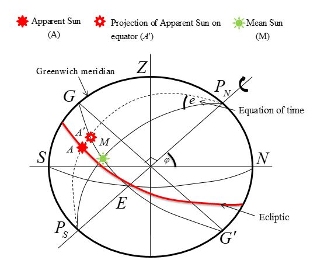

01. Year and Day
Year and Day
Day is the interval between successive upper/lower transits of some celestial body
Celestial bodies have unique movements which create different type of days
If the first point of Aries is at the upper transit of the observer’s meridian, sidereal time is 0h
In the time diagram, celestial equator becomes a circle and meridians appear as straight lines radiating from the Pole.
When the star is on the observer’s meridian, i.e. upper transit of the star, h=0
When the observer is on the Greenwich meridian
Solar day varies due to :
To overcome this problem, a Mean Sun is introduced, which is an imagined to move along the equator with constant angular velocity.
Mean Solar Day
Mean Solar Time
UT/GMT is hour angle measured from the lower transit of the Mean Sun from Greenwich meridian.
First point of Aries, Mean Sun & Apparent Sun are used to measure the time.
If relative positions of celestial bodies on the celestial sphere were constant, their hour angle is equally changed during the same time interval.
i.e. 1 hour of mean time = 1 hour of Sidereal time
???
At position 1, S and γ are together on the observer’s meridian.
At position 2, Earth has rotated around its axis until γ is again on the observer’s meridian, in the meantime, Earth has travelled a short distance around the Sun.
At position 3, Earth has rotated a little further, so that S now on the observer’s meridian
Solar day is slightly longer than Sidereal day.
After passing position 1, when the Earth is again at position 1, i.e. after one solar year, S and γ are again together. But Sun has lost one round, i.e. one solar day has lost.
There are 366.2422 sidereal days in a Solar year. i.e. 365.2422 solar days in a Solar year.
Lets now replace the apparent Sun with Mean Sun.
M has lost 24 hours against 366.2422 sidereal days, then one sidereal day:
Retardation of Mean time on Sidereal time.
Lets now replace the apparent Sun with Mean Sun.
γ is moving faster than M. In 365.2422 solar days γ has one round (24 hours) ahead :
Acceleration of Sidereal time on mean time.
Lets now replace the apparent Sun with Mean Sun.